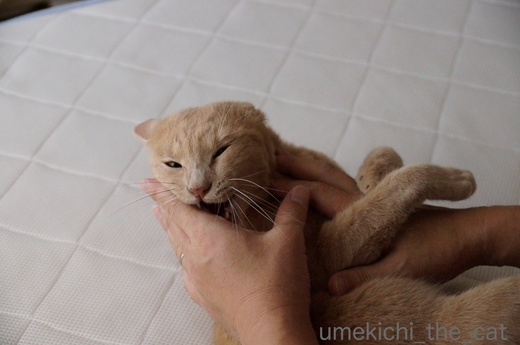
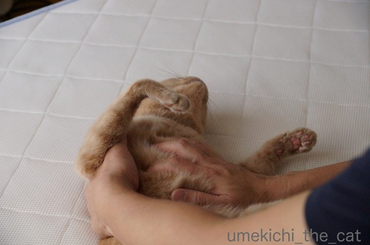
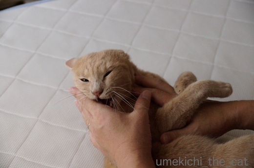
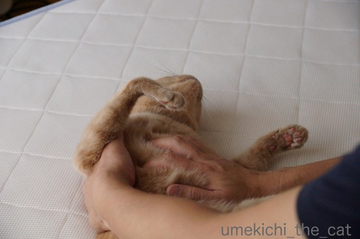

梅吉プロレス [梅吉]
おとーさんの手に狙いをつける時は


思い切り姿勢を低く！

![[猫]](https://blog.ss-blog.jp/_images_e/101.gif) がぶや！がぶがぶ！！
がぶや！がぶがぶ！！
梅吉の大好きな遊び、おとーさんとのプロレス。
おかーさんとじゃらしでまったり遊ぶのも良しなのですが
なんや あぐれっしぶにあそびたいわ〜
な気分の時は自分からおとーさんの足にがぶがぶして誘いに行きます(⌒_⌒;

ひっさつがぶやで〜！
お耳がなくなってますよ。
戦う時、相手にかじられない様に（おとーさんはかじりませんよ）お耳を畳むのでしょうか。

戦いの最中なのにお腹をなでなでされたらうっとりしちゃうのが梅吉プロレスの特徴です。

ええかんじやで〜
と言いながらあんよはいつでも蹴りを入れられる様なポジショニング^^;

うっとりしていたのに突然「ハッ」と我に返って再ファイト。
抱え込みのがぶ、決まりました！
今日からお盆休みに入った我が家。
これから毎朝こんな光景が繰り広げられそうな予感です。
 ↑ガブッと一押し↑
↑ガブッと一押し↑
冷蔵庫の上で休息中。
今日はひときわ暑い大阪です。
水分を採ってちゃんと休息もとらなくちゃ。


思い切り姿勢を低く！

梅吉の大好きな遊び、おとーさんとのプロレス。
おかーさんとじゃらしでまったり遊ぶのも良しなのですが
な気分の時は自分からおとーさんの足にがぶがぶして誘いに行きます(⌒_⌒;

お耳がなくなってますよ。
戦う時、相手にかじられない様に（おとーさんはかじりませんよ）お耳を畳むのでしょうか。

戦いの最中なのにお腹をなでなでされたらうっとりしちゃうのが梅吉プロレスの特徴です。

と言いながらあんよはいつでも蹴りを入れられる様なポジショニング^^;

うっとりしていたのに突然「ハッ」と我に返って再ファイト。
抱え込みのがぶ、決まりました！
今日からお盆休みに入った我が家。
これから毎朝こんな光景が繰り広げられそうな予感です。
冷蔵庫の上で休息中。
今日はひときわ暑い大阪です。
水分を採ってちゃんと休息もとらなくちゃ。
タグ：プロレス

カフェオレ色の梅吉

梅吉 2023年8月10日 永眠


梅吉と出会った譲渡会

犬猫の理由なき殺処分ゼロ
妄想広告
UMEKICHI 光

爆発的に早い！
時々攻撃的！
Thanks to Mr.Boss365
爆発的に早い！
時々攻撃的！
Thanks to Mr.Boss365

エキサイトしていますね～お父さんとのプロレスが一番ストレス発散なのかな？
by みぃにゃん (2017-08-10 18:05)
お父さんがお休みで、大喜びの息子って感じでいいですね。「えっ！1日おウチにいるの？！」みたいな。
お母さんと遊ぶのもいいけど、お父さんとヤンチャに遊ぶのもまたひと味違っていいんでしょうね。梅吉君、お腹ナデナデは平気なのねฅˆ•ﻌ•ˆฅ♬
by BillK-ko (2017-08-10 18:06)
あっ！キャー！リングサイドの汗かぶり席（梅ちゃん、汗かかないか！）で観たい♪
by Ginger (2017-08-10 19:25)
梅吉さん折れ耳のスコになっちゃってる～(^▽^;)
ちゃんと甘噛みできるのは賢い！
おとーさんの手、赤い線だらけじゃないですもん・・・爪も出てないしホント偉い！！
我が家は猫父は今日からず～っと休みですが、私は飛び石。損した気分^^;
by ゆきち (2017-08-10 20:43)
おとーさんの大きな手でお腹をなでなでされてる梅吉さん、
気持ち良さそうですね。
冷蔵庫の上では幼い寝顔を披露していますね。
by kiki (2017-08-10 20:49)
おとーさんとのファイトの間に
お腹ナデナデされてまったりしちゃう梅吉さん♪
可愛くてしかたがないですね♪
お盆休みの間は梅吉さんにとっても
至福の時ですね(*^_^*)
by きぃ (2017-08-10 20:57)
おとーさんの手に添えられてる後足がかわよいし、確かにスコに見えます~。
by zombiekong (2017-08-10 21:16)
プロレス、真剣ですね！！
おとーさんの手の痛みが伝わってきまス。^^;
冷蔵庫の上、めちゃ気持ちよさそうですね。
笑顔になってますね。^^)
by yes_hama (2017-08-10 21:48)
加減して噛んでるんですよね。
本気で噛むと、そーとーの痛さだと思います(^^♪
私は、モモに本気で噛まれたことが何度もあります。
そーとーの痛さでした(^-^;
by riverwalk (2017-08-10 22:29)
40度近い毎日ってなんなんでしょうねぇ。
昔は30度そこそこだったような気がします…。
…ということで
夏→半袖→傷丸見え→つり革で視線を集める…。
ゆづは容赦なし、待ったなしです。
お腹をさすったらやめてくれるなんて梅吉くんはエラい！
by も〜 (2017-08-10 22:39)
ガブガブプロレス顔になでなでうっとり顔、
梅吉くんの表情、いつもとても印象的ですね~。
うれしい、楽しい気持ちになります。
とどめは休息顔♪
by ふにゃいの (2017-08-10 22:47)
真剣に戦ってますねぇ。
でも、二人はとっても仲良しなのでしょうね＾＾
by ぽちの輔 (2017-08-11 07:25)
梅吉さん、ファイターですね♪( ´▽｀)
先代猫と私もこうやってよくプロレスしたなぁ( ^ω^ )
あまりにも遠慮なくガブガブするので、ぐーを口の中に入れて
余計に噛まれたりとかw
あっ、でもお腹もふもふすると梅吉パパと違って抱え込みキックされまくったっけ(*_*)→遠い目w
by ニッキー (2017-08-11 11:20)
お父さんがお盆休みだと嬉しいね～(^-^)
梅吉くんのプロレスはエンターテイメント性が高くて
魅せるプロレスですね。ハラハラしちゃうよ～＞＜
家のプロレスは結構本気ｗ
キックキックされて出来た小さなひっかき傷がかゆくなりますｗ
by emi (2017-08-11 14:39)
梅吉くんナイスファイトですね！ご主人手が血まみれになりませんか？え、ちゃんと甘噛み出来るの？すごいなぁ
冷蔵庫の上の表情。たまりませんね～(*´▽｀*)
by palpal (2017-08-11 14:42)
おとーさんとのプロレス、楽しみにしてるんですね♪
ちゃんと甘噛みしてるのが偉い！
途中でお腹撫でるのもありなんだ～＾＾
抱え込みのガブ、やったーって感じ＾＾
by sana (2017-08-11 19:22)
お盆は、連日の猛ファイトとなりそうですね。
私は、やはり梅吉君を応援したいと思います。
いい光景ですねー。
by うめむす (2017-08-11 22:25)
おとーさんも、梅吉さんもどちらにとっても
幸せなプロレス、ほほえましく癒やされます。
世界中がこういう平和な戦い？だけになれば
いいのになあ。
by うっかりくま (2017-08-11 23:16)
やっぱり、やんちゃに遊ぶ時はおとーさん、なんですにゃ♪
そういえば、臨戦態勢の猫は、み〜んな、耳たたんでますね！
やっぱり、耳、ちぎられちゃアカン、ってことかしら〜
休息中の梅吉さん、なんとやすらかな笑顔だろう♡
by のらん (2017-08-12 15:21)
お耳をたたんだ梅吉さん、違う動物に見える〜(^.^)
お腹をワシャワシャされて、
不覚にも恍惚状態になってるのが笑えます。
おとーさんと大好きな遊び、いっぱい楽しんでね。
by morichan (2017-08-12 17:46)
これだけ戦闘体制なのに
弱点があるのですね？(笑)
うちの猫はお腹を触るとプロレスのスイッチが入ります。
by 響 (2017-08-12 21:26)
みぃにゃんさん＞もう大エキサイトです( ^ω^ ）
プロレスの他に追いかけっこもあるのですがどちらも楽しそうで
梅吉も見ているこちらもストレス発散です。
BillK-koさん＞おっとが寝坊しているのもせいもあると思うのですが
仕事に行く日行かない日、分かっているんですよねー。
仕事に行く日の朝は遠巻きに見ている感じなのですが
休みの日は手や足に絡む絡む(^▽^;)
二人で遊んどいてや〜って感じですww
がぶがぶ坊主ですがお腹ナデナデはOK!気持ちが良いのはウェルカムなのよー。
Gingerさん＞リングサイドは毛かぶり席かもしれません(*>艸<)
（抜け毛、舞う舞う！！！）
至近距離で見るとますます面白い梅吉プロレス。笑いが止まらないのでお覚悟を！！
ゆきちさん＞猫同士が喧嘩するみたいな本気噛みではありませんが
けっして甘噛みじゃないのですよ〜 (^▽^;)
御察しの通り爪は出しません！ここはえらい！！
今回の写真ではあまりわかりませんがオットの手は赤い線だらけ。
流血の跡もあったりして半袖の季節は「あの人の手傷だらけやん！」と
思われているはずです。（時々あごにも赤い線あるし！）
私はもう見慣れているのであまり気になりませんが(*>艸<)
お盆の飛び石お仕事、お疲れ様ですm(_ _)m
kikiさん＞おとーさんの手と足、なでなでされるのも（足ではしませんが^^;）
がぶがぶするのも大好きで〜すww
プロレス時の闘志溢れる顔と寝顔・・・違いすぎますよねーＯ(≧▽≦)Ｏ
これが下僕心をくすぐるポイントでもあるのですが(^_－)☆
きぃさん＞どんなに張り切ってがぶがぶしていてもお腹を触ると
なぜかうっとりするんですよね(*>艸<)
お休みの間は二人でたっぷり遊んでください！という感じです。
でも休み明け、同じレベルの遊びを私に期待されるとツライわ〜ww
zombiekongさん＞梅吉スコ化！？(*>艸<)スコ座りも習得させたいですわww
うしろあんよは可愛いのですがなかなか良いキックを繰り出すんですよ！
yes_hamaさん＞おお、おっとの痛みを感じていただける方が・・・(꒦ິ⌑꒦ີ)
私はげらげら笑いながら見ているだけなのでyes_hamaさんの同情に
おっとは涙していることでしょう・・・・・
梅吉はあまり暑がりでは無いようなので冷蔵庫の上みたいな
ちょっと暑くてせまい空間が落ち着く様です＾＾ザ・にゃんこ＾＾
riverwalkさん＞うふふふ・・・怒りの本気噛みではありませんが
加減もしていないんですよー(*>艸<)
「そーとー痛いんだよ」とおっとがいつも言っていますww
ま、猫変態なので痛みが喜びに変わっていると思われますよ( ^ω^ ）
も〜さん＞気象台の公式最高気温は涼しいところで計測しているんでしょーと
いつも思っています。
アスファルトの照り返しのキツイ場所では体感気温は本当に連日40℃ですよね！
湿度もあって不快だし・・・・・
おっとの腕の傷も相当なものですよ！きっとも〜さんに負けないくらい！！
私はもう見慣れちゃっているので気にならなくなってますが(⌒_⌒;
ふにゃいのさん＞梅吉は気持ちが表情や仕草によく出るねこで
プロレス時には「ふんが〜〜〜」という鼻息が付くんですよww
それを聞いていただくと更に楽しい気持ちに♪
動画でお届けできなくて残念！！
ぽちの輔さん＞仲良しすぎるんですよね〜。
「対等」とも言えるかもしれません(*>艸<)
ニッキーさん＞先代猫さんはニッキーさんとも仲良しだったのですね＾＾
おっとは開いたお口に指を入れている様でよく「いたたたたたたた！」と
叫んでますよぉ(*>艸<)
そんな梅吉がお腹モフではなぜか一気に弛緩します。
そんなじゃケンカ出来ないしやっぱりお外では暮らせない子なんだよねーと
夫婦で妙に納得してますww
emiさん＞梅吉プロレスは随所に笑いの要素がちりばめられた
楽しめるプロレスなんですよ〜。
リングサイドにいるととばっちりのがぶを食らうこともあるので
参加型とも言えるかもしれません(*>艸<)
でもがぶがぶは本当に痛いんです（爪は絶対出さないの！）。
おっとの手はもちろん私の手も赤い線いっぱい付いてます^^;
palpalさん＞いえいえ、戦うときは真剣に。なので甘噛みではありません^^;
流血も時々ありなので夫婦二人必ずどこかにカサブタが・・・・・
sanaさん＞本気噛みではありませんが甘噛みでもないという・・・(⌒_⌒;
でも、本ニャンは「楽しい遊び！」と思っているのでそれなりに
加減してくれているのかもしれませんが。でも痛いの〜。
この痛さが下僕にはたまらない・・・という説もありますけどね(^_－)☆
うめむすさん＞おっとは「いたい〜」と叫んでいますが
端で見ている私は「仲の良い親子やなぁ」とほっこりです(*>艸<)
梅吉への応援ありがとうございます！
うっかりくまさん＞こんな楽しい戦いばかりだったら笑いの絶えない世界になりますね！
世界の為政者の方にはぜひ猫を飼ってもらいましょう。
にゃんこを構うのに忙しくてつまんない争いしている暇なくなるから！！
今現在飼っている方には更に頭数を増やすことをお勧めしましょう(^_－)☆
のらんさん＞私とおっとそれぞれの遊び方、見事に使い分けてますね〜。
私に対しては「おかーさんおこらせたら ごはんの危機やからな！」と
思っている様なそぶりも・・・(*>艸<)
お耳ぺったんこは梅吉だけではないのですね〜。
自前のヘルメットみたいな感覚なんでしょうかww
morichanさん＞そうそう。
カワウソとかミーアキャットとかプレーリードッグとか(*>艸<)
お耳がもう少し見えているとヨーダっぽい時もあるんですよww
不覚にもうっかりうっとり恍惚状態、はっと我に帰る瞬間の顔がまた面白くて。
（今回はシャッターチャンスを逃しちゃいましたが・・・・）
休みに入ってから毎朝二人でドッタンバッタンしている音が聞こえてきてます( ^ω^ ）
抜け毛もすごいのでお掃除おかーさんの出番も増えてます！
by ちぃ (2017-08-12 21:57)
響さん＞にゃんこでもお腹はオン・オフスイッチそれぞれなんですね〜＾＾
プロレスのお相手は響さんなのでしょうか(*>艸<)
by ちぃ (2017-08-12 21:59)
ちい様ありがとうございます。私も毎日押しに来ます。でも猫全体のカテゴリーでは難しいですよね。もっと狭いカテゴリーに変更してくれませんか。梅吉さんファンクラブのみんなと応援し続けます。
by zombiekong (2017-08-13 16:49)
zombiekongさん＞おめでとうございます！！
私のランキング参加はバナーを掲載してはいますが
自分でも押していないという体たらくです(⌒_⌒;
押してくださっている皆様がいるのだからもっと真面目に取り組まなきゃ！ですね。
カテゴリー、「がぶがぶ猫」とか「プロレス猫」「白目猫」なんかがあると
ぶっちぎれる自信があるんだけどなー(*>艸<)
by ちぃ (2017-08-13 16:56)
ガブガブ猫、いいなぁ。
うちは、見るだけで遊んでもらえません^^;。
by nachic (2017-08-16 11:18)
楽しそうだーーーー！^^
がぶがぶｗｗ
がぶがぶしてるときの細い目が可愛すぎます(笑)
ついついうっとりしちゃうのね、梅吉君ｗ
by リュカ (2017-08-16 19:19)
nachicさん＞梅吉は大阪の子らしくノリが良いので
すぐ誘われてガブガブしちゃうんですよ〜。
痛いですが手ごたえ十分です(*>艸<)
リュカさん＞ガブガブ遊び痛いけど楽しいよーー！
画像を見ている限りでは「なんて凶暴な・・・」と思っちゃう方もいるかもしれないけど
梅吉も飼い主も楽しい遊びなのよww
梅吉が本気出したらこんなものじゃないから！
（動物病院の先生に飛びかかろうとした時はすごかった^^;）
その証拠のついついうっとり〜〜(*>艸<)
by ちぃ (2017-08-17 14:29)
おお、梅吉さん楽しそうだぁ！
ワタシの親父とコテツ（実家の猫）も、よくこうやって遊んでますよ～(^o^)
ウチは、プロレスはニャンコ同士ですねぇ。
無理やりひっくり返そうとすると、自然に任せている爪がグサっと...(:_;)
by ひでぷに (2017-08-17 19:29)
ひでぷにさん＞ひでぷに家はご家族そろってネコ好きですか！
息子宅ではプロレスしようとすると愛の爪ムチが入るのですね〜(*>艸<)
by ちぃ (2017-08-17 20:45)